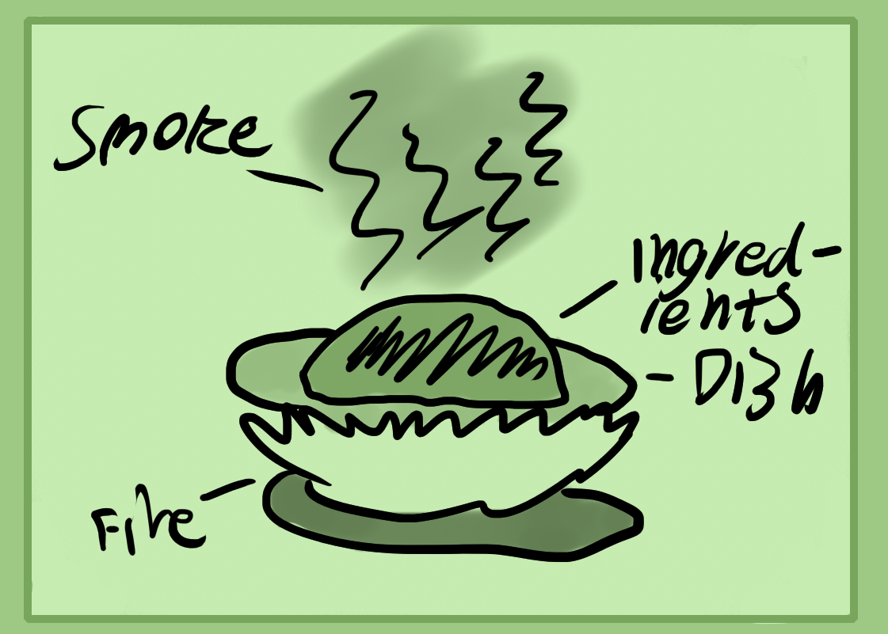
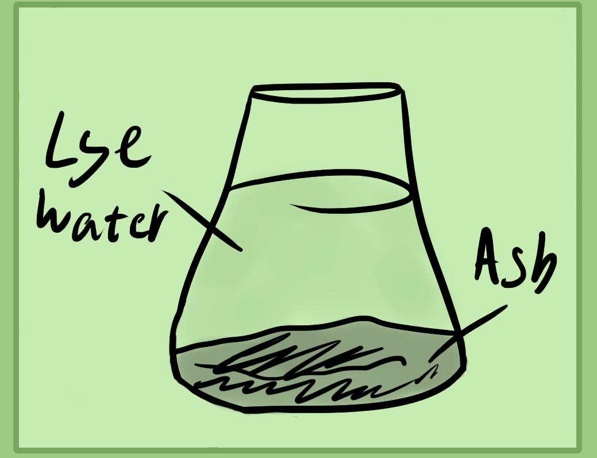
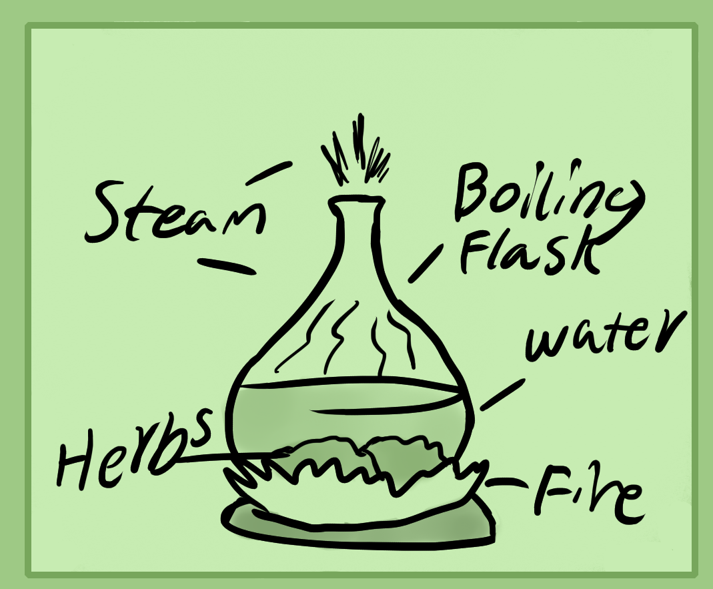
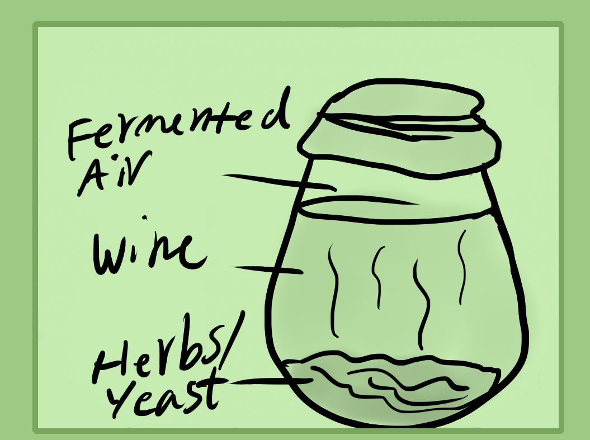
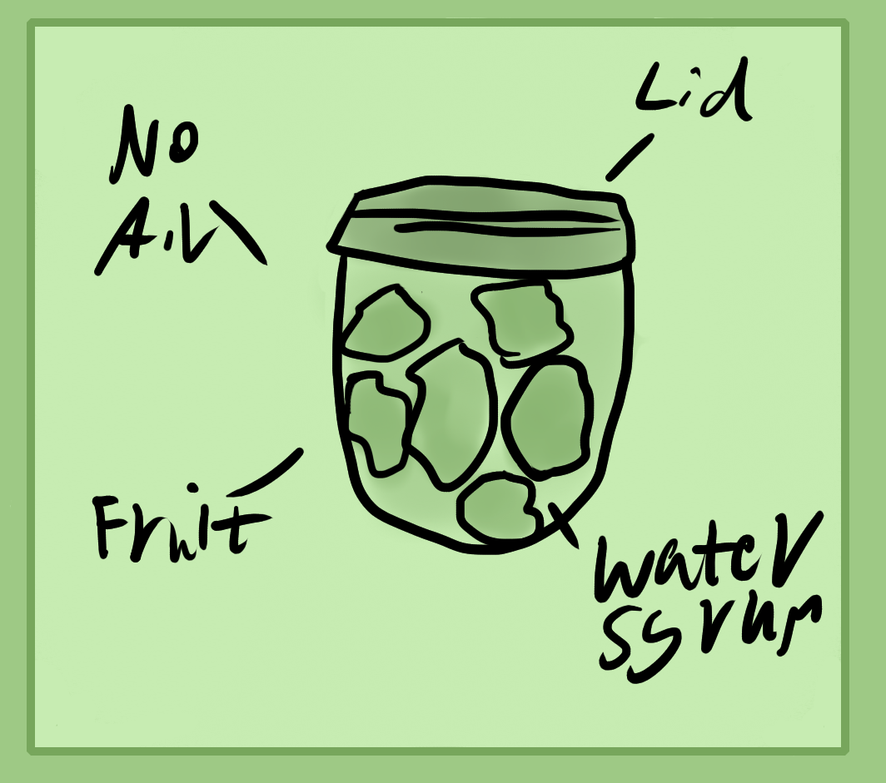
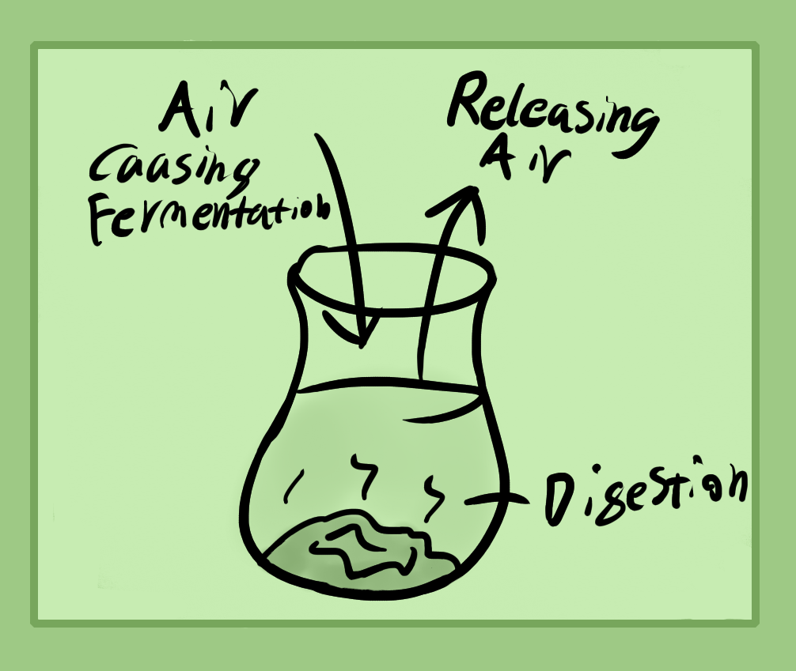

Calcination
First is calcination. This is usually done by burning your powdered material in open air over a very hot flame. The heat will influence how pure your ash will be. Regular metal powder is instead "oxidized" which is still a metallic "ash".
Here is a simple picture to show calcination. At the bottom is a fire, hot plates aren't usually strong enough. Next is either a heat resistant ceramic dish or a metal plate/bowl/pot/cauldron. On top of this is your powdered or ground herbs/mineral/animal product. It'll smoke heavily so you want to either do this outside or in a heavily ventilated area. Some minerals can also catch fire which is normal, just give them some time.
Usually this takes about half an hour to an hour for a pound of material. Stir it every 10 or so minutes with a long metal spoon or metal stick. Once it reaches the whitest it can be, which depends on the type of material, crush it up and powderise it in a mortar and pestle.
This whiteish gray powder is an oxide for metal or a carbonate if herbal (usually sodium and potassium) and if animal an oxide or carbonate (calcium and phosphorus).
For herbal and animal we can further refine these powders into crystals or whiter powders using water. This changes the carbonate or oxide into a hydroxide chemically. To do this you'll want to mix water warm into your ash, around 2-3 times the amount of ash. If mixing water with animal bone ash, be careful of heat, also be careful of alkalinity of this solution. Don't let it touch your skin if possible, though it wont kill you or melt your hands off. Just wash it off quickly with water.
Once the ash and water is mixed, let the mixture sit until the dense ash which wont dissolve go to the bottom. Now you'll want to "decant" which is pour off the top clear liquid into another container or draw it off using a 100ml+ plastic syringe.
This liquid is a highly alkaline lye water. Also make sure to use glass or plastic containers for mixing and making this lye. Metal can be corroded.
Next is to heat this solution to crystalise it. You can also use it in a liquid form for some recipes though.
Either pour it on a wide dish and put it in the oven on around 100 degrees celsius to dry it out or use the summer sun. Another way is to simmer it down slowly to a crystal slurry. Once it's a thick, liquid oily crystal substance you want to put it in a closed jar or dish and let it crystalise over night in a dark dry area. You can recrystalise it again if you want by spraying it with water.(Postnote - Once it's physical don't let it open to the air for too long, it's a volatile salt and will evaporate.)
Concocting
Next is a simpler process that is one of the most essential and important. This is concocting, which is kind of like making a stronger tea.
Metal pots, cauldrons and even glass boiling flasks can be used to concoct. Usually water is the most simplest and well used liquid, especially for herbal and animal parts, though minerals are concocted in their relating acids usually.
To concoct, first bring your liquid up to a boil. Make sure not to use acids in metal cookware. While the water is warming, add your ingredients and stir them in to moisten. Once at a boil, reduce the heat to a simmer.
Tea is usually simmered for 2-3 minutes for flowers or mild tea. 5 minutes for stronger and 10 minutes for roots. True concoctions are anything beyond 30 minutes and up to around 4 hours. Though you can cook your ingredients for an entire day or more. Make sure to add more water if you cook for over an hour.
Fermenting
Fermenting is kind of like creating an artificial digestion. It's different to preserving like jam preservation or pickling where you don't want the food to digest. Beer brewing and miso or soy fermenting are two examples.
Preserving
First I'll explain basic preserving so that you don't do this by accident and wonder why nothing's happening. To preserve you need a jar, and the food or liquid you want to preserve along with either sugar, salt, water or vinegar. Sweets are preserved in sugar water while savory are preserved in salt or vinegar or both.
Wash your lidded containers and food products. Cut up your food or prepare it in whatever way you want and put them in the container.
Next fill up the rest of your container with either salty water, sugar water or salty vinegar. You'll want to put the jar in simmering hot water to cook it.
Exposure to air will cause it to expire again.
Next is to close the container and either dig a hole underground in your back yard, put it in a fridge, a dark cupboard or some other dark cold space.
If you wish to eat this again, look and see if there's any mold or a bad rotten smell, if so don't eat it. If it tastes rotten and bad, don't eat it.
You can also preserve meats through brineing, smoking, salting, hanging and drying. Though I'll leave that up to you to figure out.
So essentially preservation relies on denaturing from heating, drying the natural liquids and storing it in a dry, dark and cold space. This relates to the earth element.
Fermenting
There's several ways to cause fermentation to happen. One is by using pre-dried yeast. I recommend buying a big amount of sugar yeast from China. Online it costs about 20$ for a few hundred grams. Another way is to keep your fermenting vessel open to the air because it is from the air that fermentation happens. Supposedly there is some micro-oganism in the air which causes it, though if you have etheric sight you will notice that fermenting stuff has a "magical" radiation surrounding it and looks to be glowing.
Open air isn't done for too long cause if you're trying to collect the volatile spirits in your liquid then they will fly away and your fermented liquid will turn into a vinegar. Open air yeast differs per geographical location.
There is also another way with natural yeast. If you look at grapes, they have a white powdery substance on them. This is wild yeast. If you crush up grapes and add them to another mixture of fruit for example, it will cause fermentation. Another similar way that beer brewers use is to moisturize their grain and spread them out on sheets, sometimes in the roof of a house(postnote - Humid area?), sometimes in lower areas. This causes them to be inoculated with natural yeast and can also cause sprouting.
Sake brewers do a similar thing but mix in their natural yeast which is found in Asia that causes rice to ferment and change it's form into digestible sugars that then change into alcohol.
Not only vegetable products can be fermented. Urine, blood, organs and corpses ferment and change into ammonia which is animals spirit or volatile. This usually needs to be done in open air or with some air.
The last kingdom of minerals can also be fermented in special states. I've found that colloids/ceramics(Postnotes - Potentially acetates too.) will ferment if you mix in a sugar water and yeast mixture. Supposedly there are other ways as well.